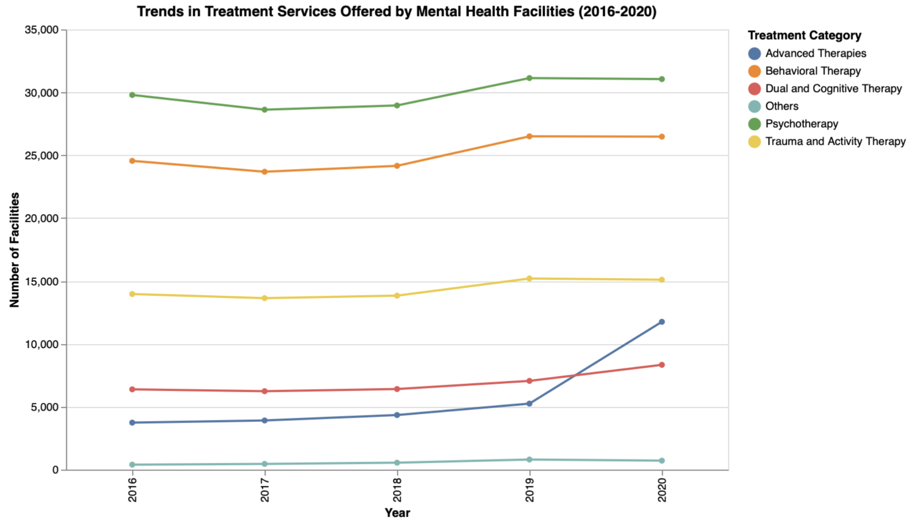

Monitoring the unemployment rate provides insights into various aspects of the economy, such as consumer spending, business confidence, and government policies' effectiveness. A high unemployment rate may indicate economic downturns, leading to decreased consumer spending, reduced business investments, and potential social unrest. Conversely, a low unemployment rate signifies a robust economy with ample job opportunities, contributing to higher consumer confidence and economic growth.
SLIDE 1
Mental Health Treatment Services Offered Trend (2016-2020)

Psychotherapy and Behavioral Therapy remained the most commonly offered services, with consistent growth across the years. Psychotherapy increased slightly from 2016 to 2020, while Behavioral Therapy peaked in 2019. These services' stability suggests they are foundational in mental health care, being well-understood and widely accepted by both patients and healthcare providers.
The number of facilities offering Advanced Therapies more than tripled from 2016 to 2020, suggesting a shift towards more specialized and innovative technology-driven treatment options, fueled by technological advancements, and possibly, the pandemic, which highlighted mental health challenges and led to an expansion in available mental health services, possibly due to increased funding, innovation, or urgent demand. Dual and Cognitive Therapy saw notable growth at the same time which may also be attributed to the above reasons.
SLIDE 2
Monitoring the unemployment rate provides insights into various aspects of the economy, such as consumer spending, business confidence, and government policies' effectiveness. A high unemployment rate may indicate economic downturns, leading to decreased consumer spending, reduced business investments, and potential social unrest. Conversely, a low unemployment rate signifies a robust economy with ample job opportunities, contributing to higher consumer confidence and economic growth.
SLIDE 3
Monitoring the unemployment rate provides insights into
SLIDE 3

Monitoring the unemployment rate provides insights into
SLIDE 4
Monitoring the unemployment rate provides insights into various aspects of the economy, such as consumer spending, business confidence, and government policies' effectiveness. A high unemployment rate may indicate economic downturns, leading to decreased consumer spending, reduced business investments, and potential social unrest. Conversely, a low unemployment rate signifies a robust economy with ample job opportunities, contributing to higher consumer confidence and economic growth.
SLIDE 5
Unfortunately, this is the 2010 data thus may be different than the current economics status. Also, unemployment rate may fluctuate seasonally thus adding a time series analysis will be more informative.
SLIDE 6
Based on the correlation plot, among all the features, poverty has the strongest correlation with the unemployment rate since they are both related to the economics. The percentage of single parents is the second important feature which indicates the stability of family is also strongly related to the job market. The increase of unemployment rate may also related to the increase of violent crime and murder rate but has a negative relationship with education indicators, like the percentage of people who go to high school and college. The only variable that has no direct linear relation with the unemployment rate is Metropolitan, which means the percent of residents living in a metropolitan area.
SLIDE 7
This slide showcases a key visualization of facilities per 100K population.
Conclusion
Monitoring the unemployment rate provides insights into